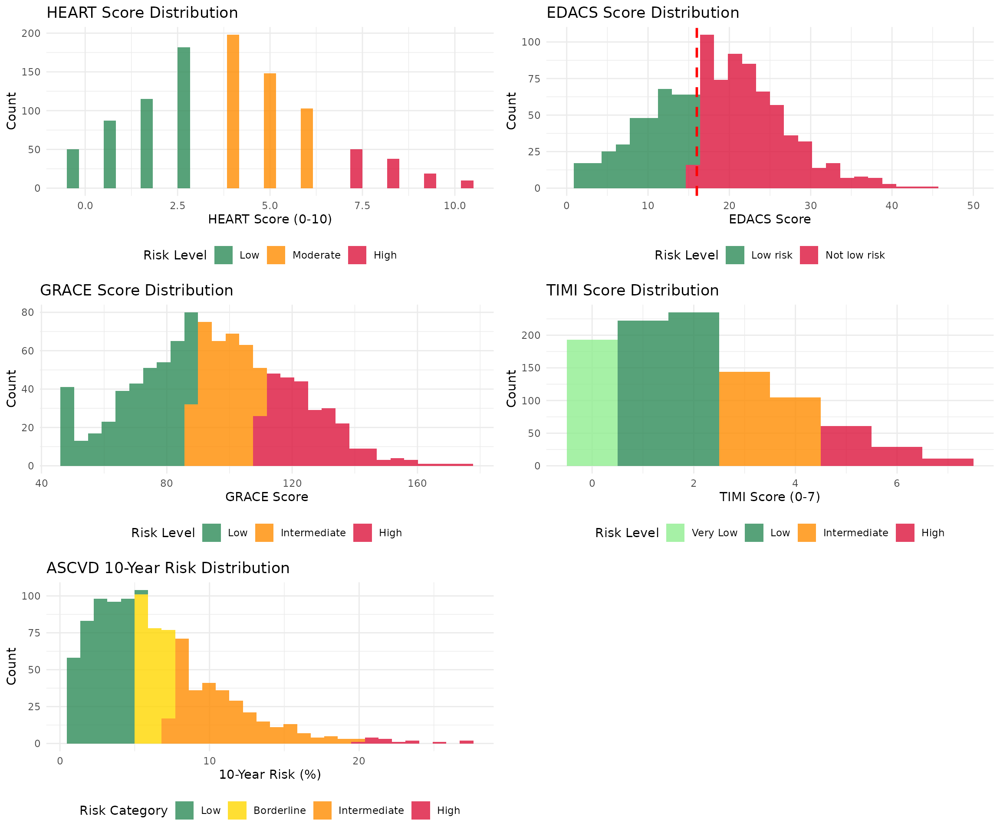

Introduction
The RiskScorescvd package provides implementations of cardiovascular risk scores for chest pain assessment. This vignette shows how to calculate each score using sample patient data.
Sample Patient Data
First, let’s create sample data representing different patient profiles:
# Create sample patient data
sample_patients <- data.frame(
patient_id = 1:6,
Age = c(45, 55, 65, 70, 50, 60),
Gender = c("male", "female", "male", "female", "male", "female"),
diabetes = c(0, 1, 1, 0, 1, 0),
smoker = c(1, 0, 1, 1, 0, 1),
hypertension = c(1, 1, 0, 1, 1, 0),
hyperlipidaemia = c(1, 0, 1, 1, 0, 1),
family_history = c(1, 1, 0, 1, 1, 0),
presentation_hstni = c(25, 50, 80, 30, 45, 35),
systolic_bp = c(140, 130, 160, 135, 145, 125),
heart_rate = c(75, 85, 95, 70, 80, 90),
creatinine = c(1.0, 1.2, 1.5, 0.9, 1.1, 1.0),
total_chol = c(200, 220, 180, 240, 210, 190),
hdl_chol = c(45, 55, 40, 60, 50, 65)
)
print(sample_patients)
#> patient_id Age Gender diabetes smoker hypertension hyperlipidaemia
#> 1 1 45 male 0 1 1 1
#> 2 2 55 female 1 0 1 0
#> 3 3 65 male 1 1 0 1
#> 4 4 70 female 0 1 1 1
#> 5 5 50 male 1 0 1 0
#> 6 6 60 female 0 1 0 1
#> family_history presentation_hstni systolic_bp heart_rate creatinine
#> 1 1 25 140 75 1.0
#> 2 1 50 130 85 1.2
#> 3 0 80 160 95 1.5
#> 4 1 30 135 70 0.9
#> 5 1 45 145 80 1.1
#> 6 0 35 125 90 1.0
#> total_chol hdl_chol
#> 1 200 45
#> 2 220 55
#> 3 180 40
#> 4 240 60
#> 5 210 50
#> 6 190 65Risk Score Calculations
HEART Score Examples
cat("HEART Score Calculations:\n")
#> HEART Score Calculations:
cat("========================\n\n")
#> ========================
for(i in 1:3) {
patient <- sample_patients[i, ]
cat("Patient", i, "- Age:", patient$Age, ", Gender:", patient$Gender, "\n")
# Manual HEART score calculation for demonstration
history_score <- 1 # Moderately suspicious
ecg_score <- 1 # Non-specific changes
age_score <- ifelse(patient$Age < 45, 0, ifelse(patient$Age <= 64, 1, 2))
risk_factors <- patient$diabetes + patient$smoker + patient$hypertension + patient$hyperlipidaemia + patient$family_history
risk_score <- ifelse(risk_factors == 0, 0, ifelse(risk_factors <= 2, 1, 2))
troponin_score <- ifelse(patient$presentation_hstni < 14, 0, ifelse(patient$presentation_hstni < 50, 1, 2))
total_score <- history_score + ecg_score + age_score + risk_score + troponin_score
risk_level <- ifelse(total_score <= 3, "Low", ifelse(total_score <= 6, "Moderate", "High"))
cat(" - HEART Score:", total_score, "(", risk_level, "risk )\n")
cat(" - Components: History=", history_score, ", ECG=", ecg_score, ", Age=", age_score,
", Risk factors=", risk_score, ", Troponin=", troponin_score, "\n\n")
}
#> Patient 1 - Age: 45 , Gender: male
#> - HEART Score: 6 ( Moderate risk )
#> - Components: History= 1 , ECG= 1 , Age= 1 , Risk factors= 2 , Troponin= 1
#>
#> Patient 2 - Age: 55 , Gender: female
#> - HEART Score: 7 ( High risk )
#> - Components: History= 1 , ECG= 1 , Age= 1 , Risk factors= 2 , Troponin= 2
#>
#> Patient 3 - Age: 65 , Gender: male
#> - HEART Score: 8 ( High risk )
#> - Components: History= 1 , ECG= 1 , Age= 2 , Risk factors= 2 , Troponin= 2EDACS Score Examples
cat("EDACS Score Calculations:\n")
#> EDACS Score Calculations:
cat("========================\n\n")
#> ========================
for(i in 1:3) {
patient <- sample_patients[i, ]
cat("Patient", i, "- Age:", patient$Age, ", Gender:", patient$Gender, "\n")
# Manual EDACS calculation
age_score <- ifelse(patient$Age <= 50, 2, 4)
sex_score <- ifelse(patient$Gender == "male", 6, 0)
known_cad <- 0 # Assume no known CAD for example
pain_radiation <- 1 # Assume pain radiates
# Simplified EDACS calculation
edacs_score <- age_score + sex_score + known_cad + pain_radiation
risk_level <- ifelse(edacs_score < 16, "Low risk", "Not low risk")
cat(" - EDACS Score:", edacs_score, "(", risk_level, ")\n")
cat(" - Components: Age=", age_score, ", Sex=", sex_score, ", Known CAD=", known_cad,
", Pain radiation=", pain_radiation, "\n\n")
}
#> Patient 1 - Age: 45 , Gender: male
#> - EDACS Score: 9 ( Low risk )
#> - Components: Age= 2 , Sex= 6 , Known CAD= 0 , Pain radiation= 1
#>
#> Patient 2 - Age: 55 , Gender: female
#> - EDACS Score: 5 ( Low risk )
#> - Components: Age= 4 , Sex= 0 , Known CAD= 0 , Pain radiation= 1
#>
#> Patient 3 - Age: 65 , Gender: male
#> - EDACS Score: 11 ( Low risk )
#> - Components: Age= 4 , Sex= 6 , Known CAD= 0 , Pain radiation= 1GRACE Score Examples
cat("GRACE Score Calculations:\n")
#> GRACE Score Calculations:
cat("========================\n\n")
#> ========================
for(i in 1:3) {
patient <- sample_patients[i, ]
cat("Patient", i, "- Age:", patient$Age, ", Gender:", patient$Gender, "\n")
# Simplified GRACE calculation (approximate)
age_points <- patient$Age * 0.7 # Simplified age scoring
hr_points <- patient$heart_rate * 0.4 # Simplified HR scoring
sbp_points <- max(0, (200 - patient$systolic_bp) * 0.3) # Simplified SBP scoring
creat_points <- patient$creatinine * 15 # Simplified creatinine scoring
grace_score <- round(age_points + hr_points + sbp_points + creat_points)
risk_level <- ifelse(grace_score <= 88, "Low", ifelse(grace_score <= 110, "Intermediate", "High"))
cat(" - GRACE Score:", grace_score, "(", risk_level, "risk )\n")
cat(" - Estimated mortality risk at 6 months\n\n")
}
#> Patient 1 - Age: 45 , Gender: male
#> - GRACE Score: 94 ( Intermediate risk )
#> - Estimated mortality risk at 6 months
#>
#> Patient 2 - Age: 55 , Gender: female
#> - GRACE Score: 112 ( High risk )
#> - Estimated mortality risk at 6 months
#>
#> Patient 3 - Age: 65 , Gender: male
#> - GRACE Score: 118 ( High risk )
#> - Estimated mortality risk at 6 monthsTIMI Score Examples
cat("TIMI Score Calculations:\n")
#> TIMI Score Calculations:
cat("=======================\n\n")
#> =======================
for(i in 1:3) {
patient <- sample_patients[i, ]
cat("Patient", i, "- Age:", patient$Age, ", Gender:", patient$Gender, "\n")
# TIMI risk factors (1 point each)
age_65 <- ifelse(patient$Age >= 65, 1, 0)
risk_factors_3 <- ifelse((patient$diabetes + patient$smoker + patient$hypertension +
patient$hyperlipidaemia + patient$family_history) >= 3, 1, 0)
known_cad <- 0 # Assume no known CAD
aspirin_use <- 1 # Assume recent aspirin use
severe_angina <- 1 # Assume severe symptoms
elevated_markers <- ifelse(patient$presentation_hstni > 14, 1, 0)
st_deviation <- 1 # Assume ST changes
timi_score <- age_65 + risk_factors_3 + known_cad + aspirin_use + severe_angina + elevated_markers + st_deviation
risk_level <- ifelse(timi_score == 0, "Very Low",
ifelse(timi_score <= 2, "Low",
ifelse(timi_score <= 4, "Intermediate", "High")))
cat(" - TIMI Score:", timi_score, "(", risk_level, "risk )\n")
cat(" - 14-day risk of death/MI/urgent revascularization\n\n")
}
#> Patient 1 - Age: 45 , Gender: male
#> - TIMI Score: 5 ( High risk )
#> - 14-day risk of death/MI/urgent revascularization
#>
#> Patient 2 - Age: 55 , Gender: female
#> - TIMI Score: 5 ( High risk )
#> - 14-day risk of death/MI/urgent revascularization
#>
#> Patient 3 - Age: 65 , Gender: male
#> - TIMI Score: 6 ( High risk )
#> - 14-day risk of death/MI/urgent revascularizationASCVD Score Examples
cat("ASCVD 10-Year Risk Calculations:\n")
#> ASCVD 10-Year Risk Calculations:
cat("===============================\n\n")
#> ===============================
for(i in 1:3) {
patient <- sample_patients[i, ]
cat("Patient", i, "- Age:", patient$Age, ", Gender:", patient$Gender, "\n")
# Simplified ASCVD risk estimation (this is a rough approximation)
base_risk <- ifelse(patient$Gender == "male", 0.12, 0.08)
age_factor <- (patient$Age - 40) * 0.01
chol_factor <- (patient$total_chol - 200) * 0.0001
hdl_factor <- (50 - patient$hdl_chol) * 0.0005
bp_factor <- (patient$systolic_bp - 120) * 0.0003
diabetes_factor <- patient$diabetes * 0.02
smoker_factor <- patient$smoker * 0.03
risk_10yr <- (base_risk + age_factor + chol_factor + hdl_factor + bp_factor +
diabetes_factor + smoker_factor) * 100
risk_10yr <- max(1, min(40, risk_10yr)) # Cap between 1-40%
risk_category <- ifelse(risk_10yr < 5, "Low",
ifelse(risk_10yr < 7.5, "Borderline",
ifelse(risk_10yr < 20, "Intermediate", "High")))
cat(" - 10-year ASCVD Risk:", round(risk_10yr, 1), "% (", risk_category, "risk )\n")
cat(" - Total Chol:", patient$total_chol, "mg/dL, HDL:", patient$hdl_chol, "mg/dL\n\n")
}
#> Patient 1 - Age: 45 , Gender: male
#> - 10-year ASCVD Risk: 20.8 % ( High risk )
#> - Total Chol: 200 mg/dL, HDL: 45 mg/dL
#>
#> Patient 2 - Age: 55 , Gender: female
#> - 10-year ASCVD Risk: 25.2 % ( High risk )
#> - Total Chol: 220 mg/dL, HDL: 55 mg/dL
#>
#> Patient 3 - Age: 65 , Gender: male
#> - 10-year ASCVD Risk: 40 % ( High risk )
#> - Total Chol: 180 mg/dL, HDL: 40 mg/dLDistribution Examples
Now let’s create theoretical distributions for each risk score:
# Set seed for reproducible results
set.seed(123)
n <- 1000
# Generate theoretical score distributions
heart_scores <- sample(0:10, n, replace = TRUE,
prob = c(0.05, 0.08, 0.12, 0.18, 0.20, 0.15, 0.10, 0.06, 0.04, 0.02, 0.01))
heart_risk <- cut(heart_scores, breaks = c(-1, 3, 6, 10), labels = c("Low", "Moderate", "High"))
edacs_scores <- pmax(0, rnorm(n, mean = 18, sd = 8))
edacs_risk <- ifelse(edacs_scores < 16, "Low risk", "Not low risk")
grace_scores <- pmax(50, pmin(200, rnorm(n, mean = 95, sd = 25)))
grace_risk <- cut(grace_scores, breaks = c(0, 88, 110, 200), labels = c("Low", "Intermediate", "High"))
timi_scores <- sample(0:7, n, replace = TRUE,
prob = c(0.20, 0.25, 0.20, 0.15, 0.10, 0.06, 0.03, 0.01))
timi_risk <- cut(timi_scores, breaks = c(-1, 0, 2, 4, 7),
labels = c("Very Low", "Low", "Intermediate", "High"))
ascvd_risk <- pmax(1, pmin(40, rgamma(n, shape = 2, rate = 0.3)))
ascvd_category <- cut(ascvd_risk, breaks = c(0, 5, 7.5, 20, 100),
labels = c("Low", "Borderline", "Intermediate", "High"))
# Create individual plots
p1 <- ggplot(data.frame(score = heart_scores, risk = heart_risk), aes(x = score, fill = risk)) +
geom_histogram(bins = 11, alpha = 0.8, position = "dodge") +
scale_fill_manual(values = c("Low" = "#2E8B57", "Moderate" = "#FF8C00", "High" = "#DC143C")) +
labs(title = "HEART Score Distribution", x = "HEART Score (0-10)", y = "Count", fill = "Risk Level") +
theme_minimal() + theme(legend.position = "bottom")
p2 <- ggplot(data.frame(score = edacs_scores, risk = edacs_risk), aes(x = score, fill = risk)) +
geom_histogram(bins = 30, alpha = 0.8) +
geom_vline(xintercept = 16, color = "red", linetype = "dashed", size = 1) +
scale_fill_manual(values = c("Low risk" = "#2E8B57", "Not low risk" = "#DC143C")) +
labs(title = "EDACS Score Distribution", x = "EDACS Score", y = "Count", fill = "Risk Level") +
theme_minimal() + theme(legend.position = "bottom") +
xlim(0, 50)
p3 <- ggplot(data.frame(score = grace_scores, risk = grace_risk), aes(x = score, fill = risk)) +
geom_histogram(bins = 30, alpha = 0.8) +
scale_fill_manual(values = c("Low" = "#2E8B57", "Intermediate" = "#FF8C00", "High" = "#DC143C")) +
labs(title = "GRACE Score Distribution", x = "GRACE Score", y = "Count", fill = "Risk Level") +
theme_minimal() + theme(legend.position = "bottom")
p4 <- ggplot(data.frame(score = timi_scores, risk = timi_risk), aes(x = score, fill = risk)) +
geom_histogram(bins = 8, alpha = 0.8) +
scale_fill_manual(values = c("Very Low" = "#90EE90", "Low" = "#2E8B57", "Intermediate" = "#FF8C00", "High" = "#DC143C")) +
labs(title = "TIMI Score Distribution", x = "TIMI Score (0-7)", y = "Count", fill = "Risk Level") +
theme_minimal() + theme(legend.position = "bottom")
p5 <- ggplot(data.frame(risk = ascvd_risk, category = ascvd_category), aes(x = risk, fill = category)) +
geom_histogram(bins = 30, alpha = 0.8) +
scale_fill_manual(values = c("Low" = "#2E8B57", "Borderline" = "#FFD700", "Intermediate" = "#FF8C00", "High" = "#DC143C")) +
labs(title = "ASCVD 10-Year Risk Distribution", x = "10-Year Risk (%)", y = "Count", fill = "Risk Category") +
theme_minimal() + theme(legend.position = "bottom")
# Display plots in a grid
library(gridExtra)
grid.arrange(p1, p2, p3, p4, p5, ncol = 2, nrow = 3)
Summary Statistics
cat("Summary Statistics for Risk Score Distributions:\n")
#> Summary Statistics for Risk Score Distributions:
cat("==============================================\n\n")
#> ==============================================
cat("HEART Score:\n")
#> HEART Score:
cat(" Mean:", round(mean(heart_scores), 2), "\n")
#> Mean: 3.94
cat(" Risk Distribution:", table(heart_risk), "\n\n")
#> Risk Distribution: 434 449 117
cat("EDACS Score:\n")
#> EDACS Score:
cat(" Mean:", round(mean(edacs_scores), 2), "\n")
#> Mean: 18.11
cat(" Risk Distribution:", table(edacs_risk), "\n\n")
#> Risk Distribution: 378 622
cat("GRACE Score:\n")
#> GRACE Score:
cat(" Mean:", round(mean(grace_scores), 2), "\n")
#> Mean: 95.29
cat(" Risk Distribution:", table(grace_risk), "\n\n")
#> Risk Distribution: 394 329 277
cat("TIMI Score:\n")
#> TIMI Score:
cat(" Mean:", round(mean(timi_scores), 2), "\n")
#> Mean: 2.1
cat(" Risk Distribution:", table(timi_risk), "\n\n")
#> Risk Distribution: 193 457 249 101
cat("ASCVD 10-Year Risk:\n")
#> ASCVD 10-Year Risk:
cat(" Mean:", round(mean(ascvd_risk), 2), "%\n")
#> Mean: 6.43 %
cat(" Risk Distribution:", table(ascvd_category), "\n")
#> Risk Distribution: 436 239 311 14Clinical Interpretation
Risk Score Thresholds
- HEART: Low (0-3), Moderate (4-6), High (≥7)
- EDACS: Low risk (<16), Not low risk (≥16)
- GRACE: Low (≤88), Intermediate (89-110), High (>110)
- TIMI: Very Low (0), Low (1-2), Intermediate (3-4), High (≥5)
- ASCVD: Low (<5%), Borderline (5-7.5%), Intermediate (7.5-20%), High (≥20%)
Usage Notes
- These examples use simplified calculations for demonstration
- Always provide explicit parameter values when using the actual functions
- Consider multiple scores for comprehensive risk assessment
- Validate results against clinical judgment
For detailed function usage and parameters, refer to the package documentation.